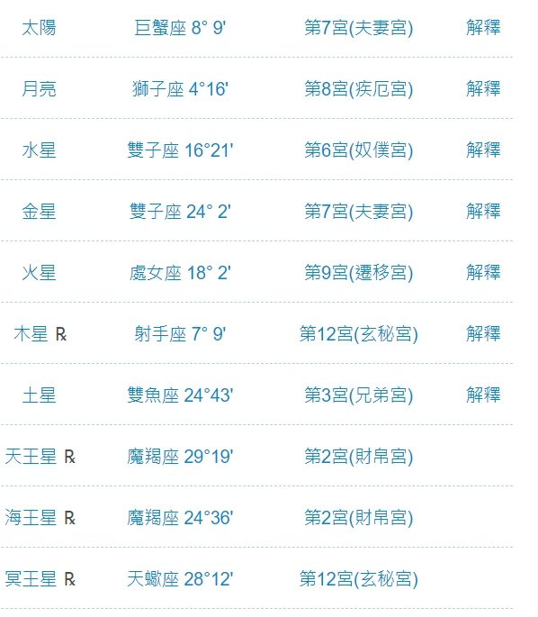

📌 偵測到你正在 App 內建瀏覽器中開啟，畫面右上角點「⋯」或分享圖示，選「用瀏覽器開啟」（Safari／Chrome），體驗會更順暢喔！
✕
靈魂
地圖
・免費體驗
先聊聊你卡住的地方，陪你看懂怎麼活出你想要的人生
📸 看範例
📸 不知道要截圖哪裡？
✕
照下面的範例，把整張星盤圖完整截下來（不用裁切），傳給 AI 引導員就可以了。
🌌 星座命盤（占星之門）
產生本命盤後，把「太陽、月亮、水星⋯⋯」這整張行星／星座／宮位對照表完整截下來。

✨ 想要更完整的解讀？點這裡解鎖完整版（NT$688）→
🔄 想聊聊別的困擾？點這裡重新開始一輪體驗
📷 命盤截圖請直接點左邊相機圖示上傳，不用傳到 LINE 給我們喔！
✕
📷
➤
此為免費體驗版，範圍為 1 種命盤系統＋1 個主題。內容僅供參考，不取代專業醫療／法律／財務諮詢。